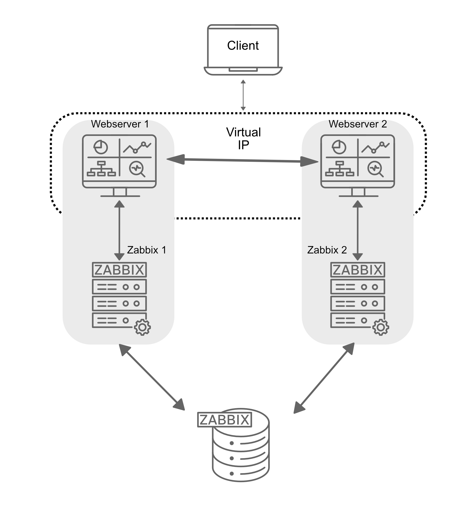
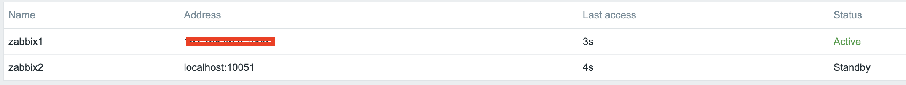
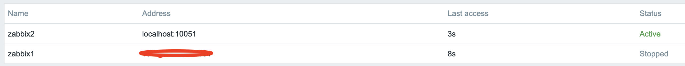

description : | Ce chapitre du livre Zabbix, intitulé « HA Setup », explique
comment configurer un cluster Zabbix High Availability (HA) pour assurer une
surveillance continue. Il détaille une installation utilisant deux serveurs
Zabbix avec une seule base de données pour créer un système de basculement
transparent. Le guide couvre l'installation et la configuration du cluster
Zabbix, y compris l'utilisation de Keepalived pour gérer une IP virtuelle (VIP)
pour le frontend, ce qui garantit un service ininterrompu. Le chapitre fournit
des instructions étape par étape pour l'ensemble du processus, de la
configuration des serveurs à la vérification du bon fonctionnement de la
configuration HA.
Configuration HA
Dans cette section, nous allons configurer Zabbix en haute disponibilité (HA). Cette fonctionnalité, introduite dans Zabbix 6, est une amélioration cruciale qui garantit la poursuite de la surveillance même si un serveur Zabbix tombe en panne. Avec HA, lorsqu'un serveur Zabbix tombe en panne, un autre peut prendre le relais de manière transparente.
Pour ce guide, nous utiliserons deux serveurs Zabbix et une base de données, mais la configuration permet d'ajouter d'autres serveurs Zabbix si nécessaire.

1.1 Configuration HA
Il est important de noter que la configuration de Zabbix HA est simple, fournissant une redondance sans fonctionnalités complexes telles que l'équilibrage de charge.
Au même titre que dans notre configuration de base, nous allons documenter les détails clés des serveurs dans cette configuration HA. Vous trouverez ci-dessous la liste des serveurs et l'endroit où ajouter leurs adresses IP respectives pour plus de commodité :
| Serveur | Adresse IP |
|---|---|
| Serveur Zabbix 1 | |
| Serveur Zabbix 2 | |
| Base de données | |
| IP virtuelle |
Note
Our database (DB) in this setup is not configured for HA. Since it's not a Zabbix component, you will need to implement your own solution for database HA, such as a HA SAN or a database cluster setup. A DB cluster configuration is out of the scope of this guide and unrelated to Zabbix, so it will not be covered here.
Installer la base de données
Reportez-vous au chapitre Installation de base pour obtenir des instructions détaillées sur la configuration de la base de données. Ce chapitre fournit des conseils étape par étape sur l'installation d'une base de données PostgreSQL ou MariaDB sur un nœud dédié fonctionnant sous Ubuntu ou Rocky Linux.
Installation du cluster Zabbix
La mise en place d'un cluster Zabbix consiste à configurer plusieurs serveurs Zabbix pour qu'ils fonctionnent ensemble et offrent une haute disponibilité. Bien que le processus soit similaire à la configuration d'un seul serveur Zabbix, des étapes de configuration supplémentaires sont nécessaires pour activer la haute disponibilité (HA).
Ajoutez les dépôts Zabbix à vos serveurs.
Tout d'abord, ajoutez le dépôt Zabbix à vos deux serveurs Zabbix :
ajouter le dépôt zabbix
Redhat
rpm -Uvh https://repo.zabbix.com/zabbix/7.2/release/rocky/9/noarch/zabbix-release-latest-7.2.el9.noarch.rpm
dnf clean all
Ubuntu
Une fois cela fait, nous pouvons installer les paquets du serveur zabbix.
installer les paquets du serveur Zabbix
Redhat
or if your database is MySQL or MariaDBUbuntu
or if your database is MySQL or MariaDBConfiguration du serveur Zabbix 1
Modifiez le fichier de configuration du serveur Zabbix,
Mettez à jour les lignes suivantes pour vous connecter à la base de données :
Configurer les paramètres HA pour ce serveur :
Specify the frontend node address for failover scenarios:
Configuring Zabbix Server 2
Repeat the configuration steps for the second Zabbix server. Adjust the
HANodeName and NodeAddress as necessary for this server.
Starting Zabbix Server
After configuring both servers, enable and start the zabbix-server service on each:
Note
The NodeAddress must match the IP or FQDN name of the Zabbix server node.
Without this parameter the Zabbix front-end is unable to connect to the active
node. The result will be that the frontend is unable to display the status
the queue and other information.
Verifying the Configuration
Check the log files on both servers to ensure they have started correctly and are operating in their respective HA modes.
On the first server:
In the system logs, you should observe the following entries, indicating the initialization of the High Availability (HA) manager:
These log messages confirm that the HA manager process has started and assumed the active role. This means that the Zabbix instance is now the primary node in the HA cluster, handling all monitoring operations. If a failover event occurs, another standby node will take over based on the configured HA strategy.
On the second server (and any additional nodes):
In the system logs, the following entries indicate the initialization of the High Availability (HA) manager:
These messages confirm that the HA manager process was invoked and successfully launched in standby mode. This suggests that the node is operational but not currently acting as the active HA instance, awaiting further state transitions based on the configured HA strategy.
At this stage, your Zabbix cluster is successfully configured for High Availability (HA). The system logs confirm that the HA manager has been initialized and is running in standby mode, indicating that failover mechanisms are in place. This setup ensures uninterrupted monitoring, even in the event of a server failure, by allowing automatic role transitions based on the HA configuration.
Installing the frontend
Before proceeding with the installation and configuration of the web server, it is essential to install Keepalived. Keepalived enables the use of a Virtual IP (VIP) for frontend services, ensuring seamless failover and service continuity. It provides a robust framework for both load balancing and high availability, making it a critical component in maintaining a resilient infrastructure.
Setting up keepalived
So let's get started. On both our servers we have to install keepalived.
Next, we need to modify the Keepalived configuration on both servers. While the configurations will be similar, each server requires slight adjustments. We will begin with Server 1. To edit the Keepalived configuration file, use the following command:
If the file contains any existing content, it should be cleared and replaced with the following lines :
Warning
Replace enp0s1 with the interface name of your machine and replace the password
with something secure. For the virtual_ipaddress use a free IP from your network.
This will be used as our VIP.
We can now do the same modification on our second Zabbix server. Delete
everything again in the same file like we did before and replace it with the
following lines:
Just as with our 1st Zabbix server, replace enp0s1 with the interface name of
your machine and replace the password with your password and fill in the
virtual_ipaddress as used before.
This ends the configuration of keepalived. We can now continue adapting the frontend.
Install and configure the frontend
On both servers we can run the following commands to install our web server and the zabbix frontend packages:
install web server and config
RedHat
Ubuntu
Additionally, it is crucial to configure the firewall. Proper firewall rules ensure seamless communication between the servers and prevent unexpected failures. Before proceeding, verify that the necessary ports are open and apply the required firewall rules accordingly.
configure the firewall
RedHat
firewall-cmd --add-service=http --permanent
firewall-cmd --add-service=zabbix-server --permanent
firewall-cmd --reload
Ubuntu
With the configuration in place and the firewall properly configured, we can now start the Keepalived service. Additionally, we should enable it to ensure it automatically starts on reboot. Use the following commands to achieve this:
Configure the web server
The setup process for the frontend follows the same steps outlined in the Basic
Installation section under Installing the
Frontend. By adhering to these
established procedures, we ensure consistency and reliability in the deployment.
Warning
Ubuntu users need to use the VIP in the setup of Nginx, together with the local IP in the listen directive of the config.
Note
Don't forget to configure both front-ends. Also this is a new setup. Keep in
mind that with an existing setup we need to comment out the lines $ZBX_SERVER
and $ZBX_SERVER_PORT. Our frontend will check what node is active by reading
the node table in the database.
zabbix=# select * from ha_node;
ha_nodeid | name | address | port | lastaccess | status | ha_sessionid
---------------------------+---------+-----------------+-------+------------+--------+---------------------------
cm8agwr2b0001h6kzzsv19ng6 | zabbix1 | xxx.xxx.xxx.xxx | 10051 | 1742133911 | 0 | cm8apvb0c0000jkkzx1ojuhst
cm8agyv830001ell0m2nq5o6n | zabbix2 | localhost | 10051 | 1742133911 | 3 | cm8ap7b8u0000jil0845p0w51
(2 rows)
In this instance, the node zabbix2 is identified as the active node, as
indicated by its status value of 3, which designates an active state. The
possible status values are as follows:
0– Multiple nodes can remain in standby mode.1– A previously detected node has been shut down.2– A node was previously detected but became unavailable without a proper shutdown.3– The node is currently active.
This classification allows for effective monitoring and state management within the cluster.
Verify the correct working
To verify that the setup is functioning correctly, access your Zabbix server
using the Virtual IP (VIP). Navigate to Reports → System Information in the
menu. At the bottom of the page, you should see a list of servers, with at least
one marked as active. The number of servers displayed will depend on the total
configured in your HA setup.

1.2 verify HA
Shut down or reboot the active frontend server and observe that the Zabbix
frontend remains accessible. Upon reloading the page, you will notice that the
other frontend server has taken over as the active instance, ensuring an
almost seamless failover and high availability.

1.3 verify HA
In addition to monitoring the status of HA nodes, Zabbix provides several runtime commands that allow administrators to manage failover settings and remove inactive nodes dynamically.
One such command is:
This command adjusts the failover delay, which defines how long Zabbix waits before promoting a standby node to active status. The delay can be set within a range of 10 seconds to 15 minutes.
To remove a node that is either stopped or unreachable, the following runtime command must be used:
Executing this command removes the node from the HA cluster. Upon successful removal, the output confirms the action:
If the removed node becomes available again, it can be added back automatically
when it reconnects to the cluster. These runtime commands provide flexibility
for managing high availability in Zabbix without requiring a full restart of the
zabbix_server process.
Conclusion
In this chapter, we have successfully set up a high-availability (HA) Zabbix environment by configuring both the Zabbix server and frontend for redundancy. We first established HA for the Zabbix server, ensuring that monitoring services remain available even in the event of a failure. Next, we focused on the frontend, implementing a Virtual IP (VIP) with Keepalived to provide seamless failover and continuous accessibility.
Additionally, we configured the firewall to allow Keepalived traffic and ensured that the service starts automatically after a reboot. With this setup, the Zabbix frontend can dynamically switch between servers, minimizing downtime and improving reliability.
While database HA is an important consideration, it falls outside the scope of this setup. However, this foundation provides a robust starting point for building a resilient monitoring infrastructure that can be further enhanced as needed.
Questions
- What is Zabbix High Availability (HA), and why is it important?
- How does Zabbix determine which node is active in an HA setup?
- Can multiple Zabbix nodes be active simultaneously in an HA cluster? Why or why not?
- What configuration file(s) are required to enable HA in Zabbix?